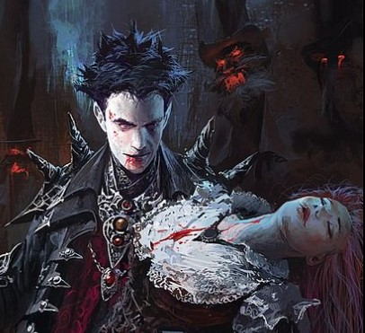
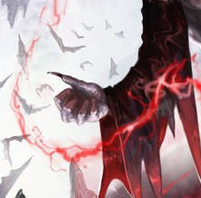
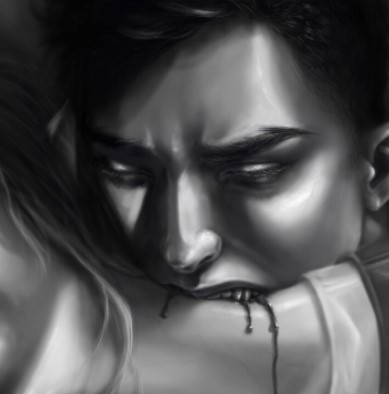
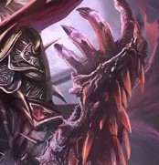
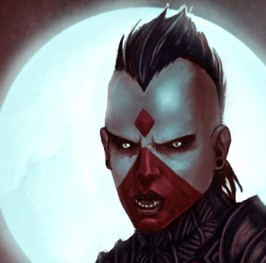
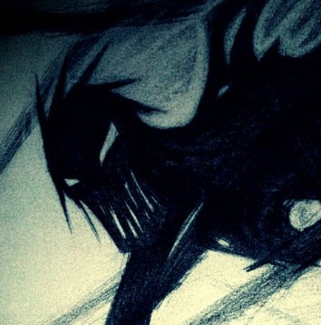

Force of life perverted into a weapon of untold anguish
Tier 1: Nobility sanctified in blood of others.-Have you ever pondered, why we drink blood? Why we can only satiate ourselves with a liquid that flows to sustain others?The gentle caress graced the shoulder of a kneeling young man, his red hair almost defiantly flowing behind him, making it seem like man was engulfed in a blaze. A tall and slender figure dressed in the finest tailored clothing in the realms, adorned with the centrepiece of its wardrobe – a scarf of flowing red silk kneeled down, almost to the eye level with the man. -We desire power, you coming to me confirmed such. And the taste of it is what we crave, we are addicted to it. The Vampire lifted the face of the man with his long well-groomed fingers, his grip gentle, yet firm around his cheeks. The man saw the eyes in front of him. Eyes of crimson. Eyes of influence. Eyes of an eternity. -The moment the first droplet of my Sire’s blood dripped onto my tongue I felt more alive than ever. The vampire’s grip grew stronger as the reminiscence invoked deep seeded power, carefully restrained before. The nails of the monster sank into the mans skin, a small red stream now running down his cheek. -It is the pleasure that rips apart your self, from the giblets of it emerging the true you. But, lets refrain from sermons. After all, this isn’t why you are here... The slender vampire stood up holding his wrist above the face of the man, exposed, dark blood pulsing in the pale veins. -I just need to hear the word. In anticipation, the kneeling man looked up at his future master, with eyes consumed by thirst. -Yes! With that word uttered, the vampire unsheathed an ornate dagger and slashed his own wrist. The crimson liquid flowed down like a river of power. As the first droplet touched the mans face, it burned like molten steel, staining the pale visage with sinful redness. The man has opened his mouth, letting the flow in. -You are born again... Alizara. Your awakening has given you a new perspective on existence, although centuries of lavish opulence have numbed your senses somewhat. There are protocols for the sons of the Sire when engaging in mortal affairs and even when fighting them. You, despite your defection, have still carried yourself around, with the nobility worthy of a count. |
||
 Shadow Waltz(Spell)(Bonus action) The darkness swirls around you as you launch a spell attack against an enemy. The bolt deals 1d4 necrotic damage and on hit gives you the bonus of a disengage action. |
 Infusion of essenceYou can infuse your spells with your own essence. Sacrificing health as a free action on your turn to increase a single instance of damage of your spells. Spells whose damage was increased in this way switch their damage type to necrotic. |
 Feed off of the Weak(Spell)(Action) Make a melee magical attack against a living target that is grappled or against which you have advantage on the attack roll. On hit this attack deals 1d4×your character level in necrotic damage, and restores half of the damage it deals as health to you. |
Tier 2: Rebirth in SuperiorityYou take the blood of your superior in. Your veins swell and tear, as the power engulfs you in an embrace of security. In your euphoric stupor, you dont even notice your shadow changing. A menacing and regal shape now follows your every step.«For those who trade freedom for power will find themselves broken and discarded upon a barren shore» |
||
 Might of the ElderYour physical stats are icreased one time by 1d8 (rolling each separately). |
 Subjugation of the ElderOnce a willing creature drinks your blood, it needs to make a Wisdom saving throw. Upon failing, their physical stats are increased by 1d4, while their wisdom score is reduced by 1d8 . They become hopelessly addicted to your blood, and will start losid 1 Wisdom score a day after a month of not tasting your blood. Drinking the blood of mortal beings pauses this effect for 2d4 days for them. |
 Shadow of the SireYour shadow can act and interract with the shadows on its own. As the looming presence of the Sire is ever behind you. As a bonus action the shadow can perform a grapple Action with a +7 bonus. Upon a successful grapple you cannot move more than 10 feet away from the target without breaking the grapple.This ability only works in well lit or dimly lit rooms where your shadow is clearly visible. |